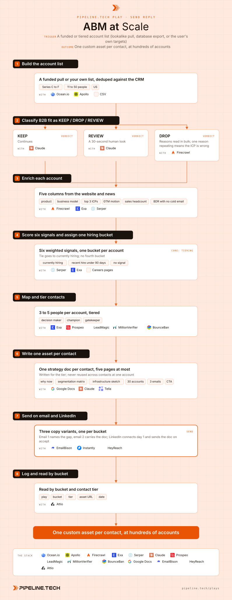

Play 12 · Send, reply and conversion
ABM at Scale
Give this to your agent
Install the Pipeline.tech "ABM at Scale" outbound play. Fetch https://raw.githubusercontent.com/pipeline-tech/plays/main/core/SKILL.md and https://raw.githubusercontent.com/pipeline-tech/plays/main/plays/abm-at-scale/SKILL.md, save them as ~/.claude/skills/pipeline-outbound-core/SKILL.md and ~/.claude/skills/pipeline-abm-at-scale/SKILL.md, then run /pipeline-abm-at-scale.
Paste into Claude Code. It installs the shared core rules plus this play, then runs it as /pipeline-abm-at-scale.

Workflow, generated from the skillOpen full size
ABM used to stop at 20 accounts because research, deliverables and contact maps were done by hand. This play runs the same steps over a few hundred accounts: classify, enrich, bucket by hiring signal, map 3 to 5 people, write a short strategy doc for each one. Every contact gets their own asset, because three people in a 30-person company compare what they received. One run took 413 raw accounts to about 900 unique deliverables.
Load pipeline-outbound-core first. Where a step says "apply core", follow that section of the core skill.
Inputs
Ask for these before step 1, and save them to ./pipeline-plays.config.json:
- The account list, or pull criteria to build one. Default pull: Series C to F, 11 to 50 employees, US.
- The ICP in one paragraph and the problem you solve.
- The offer in one sentence and one proof point. Both go into the doc and the copy.
- Strategy doc only (default) or doc plus a video brief the user records from.
- Stack answers from core section 1.
Steps
1Build the account list
ToolsOcean.ioApollo (option)CSV (option)
- Pull funded companies in the user's band, or load the user's list. A funded pull is noisy.
- Apply core: lists.
- Apply core: exclusions. Dedupe against the CRM now so warm accounts are never double-touched.
2Classify B2B fit as KEEP / DROP / REVIEW
ToolsFirecrawlClaude
- Scrape homepage and about page. Give the model the ICP paragraph and the page text, and ask for one of three verdicts with a one-line reason.
- Three verdicts, not two. A hard yes/no filter throws out borderline accounts that turn out to be in market, which is lost TAM. REVIEW rows get a 30-second human look.
- Read DROP reasons in bulk. One reason repeating means the ICP definition is wrong, not the list.
- Only KEEP and approved REVIEW rows continue. A few hundred accounts classified this way costs under a dollar.
3Enrich each account
ToolsFirecrawlExaSerper
- Pull homepage, about, services and one or two case study pages. From that text write five columns: product or service, business model, top 3 ICP segments as size plus geography plus industry, GTM motion, whether case studies exist.
- Map the sales team with one Exa search filtered to LinkedIn profiles and count titles into AE, SDR or BDR, manager, director, VP, C-suite. A BDR with no visible cold email is intent in itself.
4Score six signals and assign one hiring bucket
ToolsSerperExaCareers pages
- Score six weighted signals per account: funded in the last 12 months (15), new product or market expansion (10), sales-team gripes on review sites about leads or quotas (25), new growth-stage investor (10), hiring a salesperson in the last 15 days (25), salesperson hired in the last 90 days (15). Store hit, summary and URL for each.
- The score is directional. Review sites and job boards gate access, so those signals under-fire. A low score means no confirmed signal, not no signal.
- Put every account in exactly one bucket: currently hiring, recent hire under 90 days, or no signal. If both hiring signals fire, the account goes to currently hiring. No fourth bucket; every extra bucket is another variant of every asset.
- Apply core: tiering. Two dated signals inside a quarter make the account Tier 1 and add the call layer.
5Map and tier contacts
ToolsExaProspeoLeadMagicMillionVerifierBounceBan
- Find 3 to 5 people per account. Primary titles CRO and VP Sales; fallback founder plus head of sales when the company is too small for either.
- Tier each person: decision maker (owns the budget), champion (runs the team or feels the pain daily), gatekeeper (chief of staff, executive assistant, ops lead). A gatekeeper gets an asset too, written for someone who forwards rather than buys.
- Apply core: enrichment. Apply core: verification.
6Write one asset per contact
ToolsGoogle DocsClaudeTella (optional)
- One short strategy doc per person, five pages at most: why now (from the bucket and signals), a segmentation matrix of their top 3 ICPs with a persona and buying trigger each, an infrastructure sketch sized to their sales headcount, a starter list of 30 target accounts in their best segment, three cold email variants, a closing CTA.
- Write for the tier. The decision maker's version leads with pipeline math against headcount; the champion's with the list and copy; the gatekeeper's is a one-page summary built to be forwarded.
- Never reuse a doc across contacts at the same account. Vary the opening, examples and account list, not just the name.
- Optional: a 60 to 90 second video brief per contact (what we saw, what we built, where it is) for the user to record.
- Label the CTA a strategy session or growth roadmap session, never an audit or consulting call.
7Send on email and LinkedIn
ToolsEmailBisonInstantly (option)HeyReach
- Apply core: copy and send rules.
- Three copy variants, one per bucket. Currently hiring: the doc is the pipeline the new rep inherits. Recent hire: the doc shortens the ramp. No signal: lead with the gap the enrichment found (a BDR with no cold email, no case studies, one ICP served when three are visible).
- Email 1 names the gap and says a doc exists; email 2 is the threaded nudge with the link. LinkedIn in parallel: connect on day 1, send the doc on acceptance.
- Companies past Series B already run outbound. Write to lower their cost per meeting, not to start outbound.
- Stop every contact at an account the moment one replies; hand the thread to the owner.
8Log and read by bucket
ToolsAttio
- Apply core: CRM and alerts. Write play name, bucket, contact tier, asset URL and date on each person.
- Weekly: accounts kept, assets produced, sent, reply and interested rate by bucket and contact tier. If no-signal matches hiring on replies, the signal scan is under-firing and needs new sources, not new copy.
- Apply core: credits and handoff.
Guardrails
- Never mention review-site gripes or a named new hire in copy. Those signals pick the bucket, never the message.
- One contact, one asset. If a doc cannot be made unique, drop the contact, not the uniqueness.
- The doc is the CTA, not a gate. Send it in full, ask for nothing first.
- Do not run this play on an account in another play's sequence this month.
Example run
User: "/pipeline-abm-at-scale on this Ocean.io export, we sell outsourced outbound to small B2B software companies"
- Confirmed offer line, proof point, doc-only assets, EmailBison plus HeyReach plus Attio.
- Loaded 413 accounts, 9 removed as customers or open deals. Fit check: 287 KEEP, 71 DROP, 46 REVIEW; 19 REVIEW rows approved by hand.
- 306 accounts enriched; 41 flagged as BDR with no cold email.
- Buckets: 81 currently hiring, 118 recent hire, 107 no signal. 22 accounts Tier 1 on two dated signals.
- 912 contacts found, 847 verified across two passes, 38 catch-all in their own campaign.
- 885 strategy docs written and linked on the CRM. Three bucket variants approved, campaigns scheduled for Monday.
Run this play with usPipeline.tech runs ABM at Scale end to end for clients: infrastructure, lists, copy, sends and replies.
Book a callView on GitHub